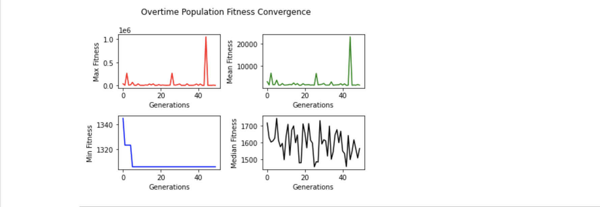

I was wondering how can I divide a chunk of binary data so that after
application of Random Linear Network Coding
overhead is as low as possible ?
For applying RLNC on a chunk of data, it needs to be splitted into smaller
pieces. Applying RLNC together on all of those pieces is costly when whole
chunk size is large, because I've to solve lots of linear system of equations
while decoding back to original pieces. Cost of matrix inversion is ~ O(n^3)
--- I don't want to spend too much time in decoding, which is why I choose to make
use of Generation-based RLNC where RLNC is only applied on pieces of
same generation. N-many generations form whole binary chunk. Each generation has
M-many pieces. And each piece has K-many symbols i.e. bytes. But passing only these
generation specific coded pieces doesn't help decoding process, it also needs to know
how exactly these pieces are combined togther, which requires encoder to also
share respective randomly generated coding vectors, having M-many coding coefficients.
Each of these coding coefficients are randomly drawn elements of Galois Field (2**8),
which is a finite field with 256 elements i.e. from 0 to 255. As I can represent each byte
in 8-bits, GF(2**8) is a good finite field choice for performing RLNC.

Let's say I've 8 bytes of data, which I want to code using RLNC while splitting it into
pieces of length 2 bytes. So each piece has 2 symbols. I've 4 pieces, which I can code
at a time i.e. single generation coding. Or I may wish to pack 2 pieces together & do it
in two generations. Each choice comes brings a cost. When performing 2 generation coding,
in first generation I've to code 2 pieces, which requires me to send at least 2 linearly
indepedent coded pieces along with respective randomly generated coding vectors to decoder
process for successfully getting back original two pieces of this generation. Each coding vector
needs to have two GF(2**8) elements, because I'm coding two pieces together of generation 1.
As each random coding coefficient is of 1 byte, for each coded piece I've to send 2 * 1 = 2 bytes
extra. This results into 2 bytes header ( read coding vector ) + 2 bytes body ( read coded piece )
= 4 bytes over wire for each coded piece. As I've to send two of these linearly independent
coded pieces, it costs me 8 bytes of data over wire.
One thing to notice here, coding coefficients are randomly drawn from GF(2**8), which might end up
generating linearly dependent coded pieces. Study suggests, sender needs to send 1.6 extra coded pieces
on average for making it fully decodable on decoder process's site. Meaning, I need to send 3.6 coded
pieces to decoder process, on average i.e. costing me 3.6 * 4 bytes = 14.4 bytes per generation. I've to follow
same process for second generation, requiring me to send total 2 * 14.4 bytes = 28.8 bytes of data to decoding
process over wire, for enabling it to fully decode 4 pieces of two generations. I wanted to transfer
8 bytes of original data, as I choose to use RLNC I'm paying with much higher data transfer cost.
This time I plan to share 4 original pieces in a single generation. As I code 4 pieces together, I need
to have a coding vector of length 4 bytes, each coefficient randomly drawn from GF(2**8). Each coded piece
need to carry 4 bytes header ( reading coding vector ) + 2 bytes body ( read coded piece ) = 6 bytes
total. Receiver needs to get atleast 4 linearly independent coded pieces to be able to fully decode
into original pieces. But study says, I need 1.6 more coded pieces, resulting into 5.6 * 6 bytes = 33.6
bytes to be sent over wire.
I could have splitted 8 bytes of original chunk into 8 pieces & applied RLNC in single generation ( read with 8 pieces )
or 2 generations ( read with 4 pieces in each generation ) --- which would have costed me differently.
All these possible choices come at a price.
Aforementioned table shows lowest possible cost is 21.6 bytes, where 8 bytes of data chunk
is splitted into two pieces, each of 4 bytes, which are coded together in a single generation.
The goal should be to choose the configuration while incurring lowest possible cost.
Following diagram is another way to visualise cost with different choices. With 7 possible
coding choices, bytes over wire is highest ( red ) when piece count is 8 ( green ) & coded in a single
generation ( blue ) with no need to pad any extra bytes ( black ). My interest is choosing last point
in plotted diagram ( index 6 along X-axis ), where bytes over wire is lowest, piece count set to 2, generation count 1 & no extra
padding byte cost.
Everytime before performing coding, I can make use of algorithm for finding all possible
configurations of coding N-bytes original chunk & choosing the one with lowest cost. But I want to
find it out in a different way --- using Genetic Algorithm.

Before I get to apply GA on RLNC Cost Optimization Problem, I've to answer some basic questions.
- How does solution space look like ?
- How to represent each chromosome ?
- What's the fitness function, available on each chromosome, which I'm trying to optimize ?
- How to generate initial population ?
- How to perform selection operation on current population, where chromosomes with better fitness to have better chance of selection ?
- How to crossover/ mate two chromosomes ?
- How does mutation of single chromosome happen ?
- And how do I make sure, after applying crossover/ mutation operator, generated chromosome is still a valid individual from possible solution space ?
My quest for finding these answers will hopefully lead me to successfully applying GA on RLNC Cost Optimization Problem & find something useful.
I already know answer to first question. My interest is in splitting whole data chunk into piece of N-bytes & grouping M-pieces
into generations, so that I can apply RLNC on pieces of same generation. I've to split & generate atleast two pieces to be able to apply
RLNC, which means if I've 8 bytes of original data, I can choose to generate 2 pieces, each of length 4-bytes. This actually allows me
to group <=4 bytes together & generate pieces of same length. I can choose to work with 1-byte/ 2-bytes/ 3-bytes/ 4-bytes piece size.
Piece size choice affects piece count & whether I need to pad any extra bytes. Extra bytes pad is needed when I choose to make each piece
of 3-bytes, because each piece must be of same length for applying RLNC. So extra zero bytes padding is a cost, I'd generally like to
avoid it as much as possible. As I know piece count, I can decide how to group pieces together to make a RLNC generation. Rule is, I must
have atleast 2 pieces in each generation for working with RLNC. Possible generation sizes are dependent on piece counts, while generation size
choice affects generation count. I've five element tuples to work with.
Solution space is a set of five element tuples, each representing a possible & valid RLNC configuration.
( piece-size, piece-count, extra-pad-bytes, generation-size, generation-count )
Answer to first question, almost answered second one too. I decide to represent each chromosome as a 5-element tuple. Though my interest was to represent chromosomes as binary strings, but seemingly this is what I've to work with. When defining crossover & mutation operators, I'll face some problems due to this kind of chromosome representation.
Third question is already answered. I know how to calculate cost over wire ( read in terms of bytes sent ) for a given 5-element tuple i.e. RLNC configuration. I use cost over wire as fitness function for each chromosome, so this is a fitness minimization problem. One thing I'm also interested in --- not sending too many extra padding bytes, which is not yet considered in cost over wire calculation. In modified fitness function, I take sum of cost-over-wire & extra padding bytes.
As I'm not working with chromosomes represented as binary strings, I can't just randomly generate a list of byte strings, to be used as initial population. Rather I randomly choose N-many 5-element tuples from possible RLNC configuration set, where N = population size of GA.
One good thing about GA selection operator is it doesn't attempt to modify any chromosome, it just randomly chooses from current population while putting more preference on chromosomes having better fitness values. And that's why I don't have to devise any specific kind of selection operator. I make use of tournament selection operator with tournament size of 3. Meaning if I decide to maintain population size of 20, I'll be randomly selecting 3 elements from current population & run a tournament on them to decide who gets to be selected to become a parent. I do another round of tournament selection to find another parent & finally crossover them while respecting crossover probability. That answers fifth question.
As I mentioned before, crossover will be little problematic because I define chromosomes as 5-element tuple instead of binary strings.
It calls for special treatment, before two tournament selected parents can be mated for generating two children. I devise a way where I
place possible piece sizes in ascending sorted order in a set, when total data chunk size is given.
As I'm working with 8-bytes whole data chunk, allowed piece sizes are
1-byte, 2-bytes, 3-bytes & 4-bytes. Placing them in ascending sorted order in a set gives me {1, 2, 3, 4} --- calling it
piece-size-set.
For first parent, say (4, 2, 0, 2, 1) is individual's chromosome, I find respective piece size ( read 4, at index 0 of tuple )'s index
in piece-size-set, which is 3. I randomly select one shift factor from range [0, len(piece-size-set)), which I'll
use for shifting piece size index ( read 3 ) leftwards/ rightwards. I get shift factor 2, while I'm working with piece-size-set of length 4.
Now for generating first child, I randomly decide to shift first parent's piece size index ( read 3 ) leftwards by shift factor 2.
This gives me new shifted index ( 3 - 2 ) % 4 = 1. I look up piece size at index 1 of piece-size-set,
which is 2. Using piece size 2, I can prepare 4 pieces, because I've to split 8-bytes of whole chunk & I don't need to pad any extra zero bytes.
So I've 4 pieces, I can group them together in any of two possible ways.
- 2 pieces together, resulting into 2 generations
- 4 pieces together, resulting into 1 generation
I randomly choose to code 2 pieces together, which gives me first child ( 2, 4, 0, 2, 2 ) ---
a valid newly generated individual. I say generated first child is valid because I can find its presence in above table.
Similarly for preparing second child, I decide to randomly shift second parent's
piece size index ( read 0, because second parent is (1, 8, 0, 8, 1) ) rightwards by shift factor 2.
Shifted index is ( 0 + 2 ) % 4 = 2, where piece size is 3. If piece size is 3, piece count is also 3,
by appending 1 extra byte. With this piece size, I've 3 pieces, which is prime, resulting that I need to code those 3 pieces together
in a single generation. So obtained second child's chromosome looks like (3, 3, 1, 3, 1) --- definitely
a valid RLNC configuration.

Mutation invites random genetic diversity in next population, which is helpful when search space is large & mostly unchartered, where exploration is of prime interest, rather than exploitation of known tricks. Mutation is a unary operator i.e. it takes a single chromosome & applies operator which results into a new chromosome i.e. individual. Same as crossover, I make use of shift factor, which I randomly choose from [0, len(piece-size-set)) --- using 3 this time. Second child chromosome (3, 3, 1, 3, 1) i.e. result of application of crossover operator is decided to be mutated. Index of piece size ( read 3 ) of this RLNC configuration is 2, in piece-size-set. This piece-size-set is same as before used during crossover --- {1, 2, 3, 4}. Random decision to shift piece size index rightwards by shift factor 3, gives shifted index (2 + 3) % 4 = 1, looking up piece size at index 1 of piece-size-set gives 2. With piece size of 2 bytes, I can have 4 pieces, while spending 0 on extra pad bytes. Again 4 pieces can be coded in any of possible two ways.
- 2 pieces together, resulting into 2 generations
- 4 pieces together, resulting into 1 generation
I randomly choose second way, giving me RLNC configuration (2, 4, 0, 4, 1), which is an individual of next GA population.
The last question is already answered --- atleast after defining crossover & mutation operator, which generates valid child chromosome(s),
where each of them are valid RLNC configuration for specified total data chunk length ( read 8 here ).
Now I've everything I need to run GA & figure out what's best possible RLNC configuration --- evidently it's (4, 2, 0, 2, 1) costing 21.6 bytes over wire.
With this configuration 8 bytes total chunk to be splitted into 2 pieces, each of 4 bytes length & those two pieces are coded together in a single RLNC generation,
while no extra padding bytes are used.
I run GA on 1024 bytes chunk for determining cheapest possible RLNC configuration, with GA population size 50 i.e. 50 chromosomes ( read possible solutions )
to be maintained in each generation. And I run GA for 50 generations, after that lowest cost solution is what GA was able to figure out --- though
it doesn't anyhow guarantee it finds optimal one.
I also enable elitism setting, which passes best individual of certain generation to next generation without any modification, respecting genetic
elitist behaviour. This ensures once an elite i.e. low cost RLNC configuration is found, it won't be lost until some lower cost
alternative individual is found --- providing me with guarantee if lowest cost RLNC configuration is ever found, genetic operators won't touch it.
After 50 generations, GA has discovered (128, 8, 0, 8, 1) as lowest cost RLNC configuration --- costing 1305.6 bytes over wire.
This configuration asks to split 1024 bytes original data chunk into 8 pieces, each of size 128 bytes. And those 8 pieces are coded together in a single generation.
I collected metrics on how GA performed in each generation --- what're minimum ( blue ), maximum ( red ), mean ( green ), median ( black ) fitness values in each of these generations. I'm specifically interested in how minimum fitness of each generation converges to lowest possible cost. It says around generation 2, cheapest configuration discovered reached ~1325 bytes, which stayed there for next few generations ( read genetic elitism at work ). And before generation count reached even 10, GA has discovered cheapest possible RLNC configuration with cost over wire of 1305.6 bytes. Data says cheapest possible configuration discovered is never lost after it's found for first time.
Using conventional way, I can discover top 10 cheapest RLNC configurations, which doesn't enlist (128, 8, 0, 8, 1) as cheapest, rather (114, 9, 2, 9, 1) is cheaper with cost over wire of 1303.8 bytes. But GA didn't choose it, as this configuration requires to pad extra 2 bytes of data at end, which is pure waste --- resulting second cheapest configuration being treated as cheapest in terms of GA, while still being little bit expensive. This behaviour is due to how I defined fitness function of chromosomes, which sums padding bytes & cost over wire. Taking first, second cheapest configurations & computing their fitness values, results into (1303.8 + 2) = 1305.8 & (1305.6 + 0) = 1305.6 --- evidently RLNC configuration (128, 8, 0, 8, 1) is chosen as cheapest by GA.

RLNC cost distribution & its change with respect to changes in other params like generation size ( blue ), total piece count ( green ), extra padding bytes ( black )
depicts when total piece count is max, #-of generations is max, padding bytes cost is 0, but cost over wire is highest. This is no doubt the configuration
where each byte is considered as a piece, making 1024 pieces, which are coded together in 512 generations total. No extra bytes were padded, but it costs very high
due to presence of lots of coding coefficient vectors, which are sent from source to destination over wire.
Required padding bytes plot ( black ) shows nice pattern over possible choice set. It's because some piece size choices are able to fully
divide 1024 ( read total chunk size ), while some are not. Between any two such piece size choice, which are able to fully divide
total chunk size i.e. 1024, possible piece size choices require increasing #-of extra padding bytes until reaches some highest value
which then abruptly falls to 0 at next piece size choice, able to fully divide 1024. This keeps happening again & again, this way highest possible
required padding bytes size may reach 200 bytes for Random Linear Network Coding 1024 bytes original chunk.
By applying GA, I'm able to find out cheapest RLNC configuration, when coding 1024 bytes chunk. Increasing total chunk size also
increases possible #-of valid RLNC configurations to a great extent, which calls for some GA hyperparameter optimization i.e. tuning
required population size, generation count, crossover/ mutation probability, tournament size etc. for reaching optimal/ close to optimal
configuration.
For future reference I keep a jupyter notebook with exploration code here.
Further I plan to explore does it make sense to use GA for determining cheap RLNC configuration in practice,
where solution space is probably much larger due to presence of huge chunk size ?